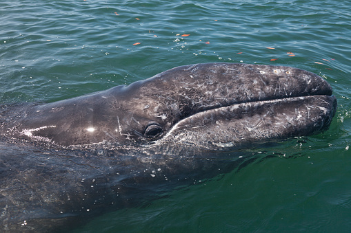

몸 길이는 출생 시 약 4.5m, 다 자랐을 때 16m 정도이며, 체중은 약 35톤 정도입니다.
몸 전체는 회색, 암회색을 띠며, 흰색의 상처 모양이 있습니다. 몸 표피(피부)에는 따개비, 굴 껍데기 등이 부착되어 있습니다.
등지느러미는 뚜렷하지 않고 여러 개의 작은 융기가 꼬리지느러미까지 연결되어 있으며, 다른 수염고래류의 특징인 복부 주름이 없고, 길이 1~2m 정도인 2~5개의 깊은 홈이 아래턱에 있습니다
[네이버 지식백과] 귀신고래 (해양생물 3D 콘텐츠)